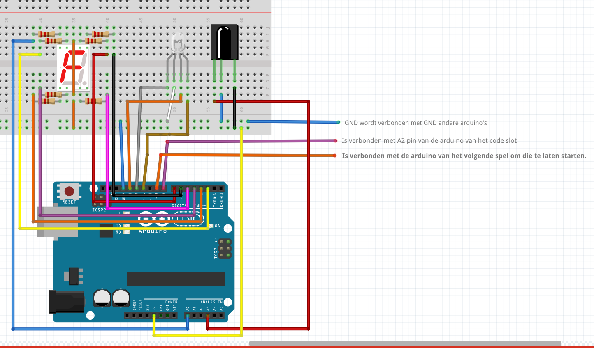

BlokSchema & Code

Een onthoud spel dat er eerste een rgb ledje 1 kleur geeft dan 2 dan … tot 5 kleuren en je moet die allemaal perfect in de juiste volgorde weer ingeven met behulp van een ir remote. Als je een verkeerde combinatie invoert dan gaat de rgb led rood beginnen pinken en dan reset het spel. Als je het spel voltooid hebt en dus elke juiste combinatie hebt gedaan dan gaat de rgb led groen pinken en verschijnt er op het 7 – segmenten display een random gegenereerd cijfer. Dat cijfer ga je later nodig hebben voor het eind code slot. Het willekeurige cijfer wordt dan ook doorgestuurd naar het volgende spel samen met een signaal dat het mag beginnen werken. Zodat alles met elkaar verbonden is.
Lees meer